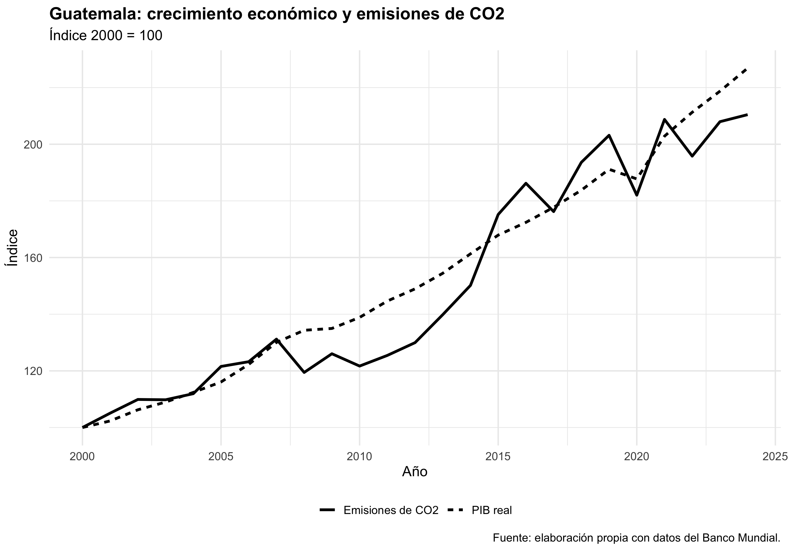
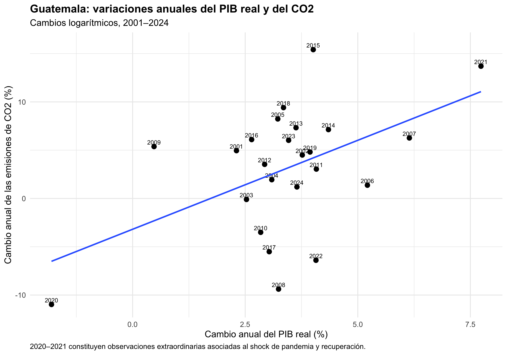
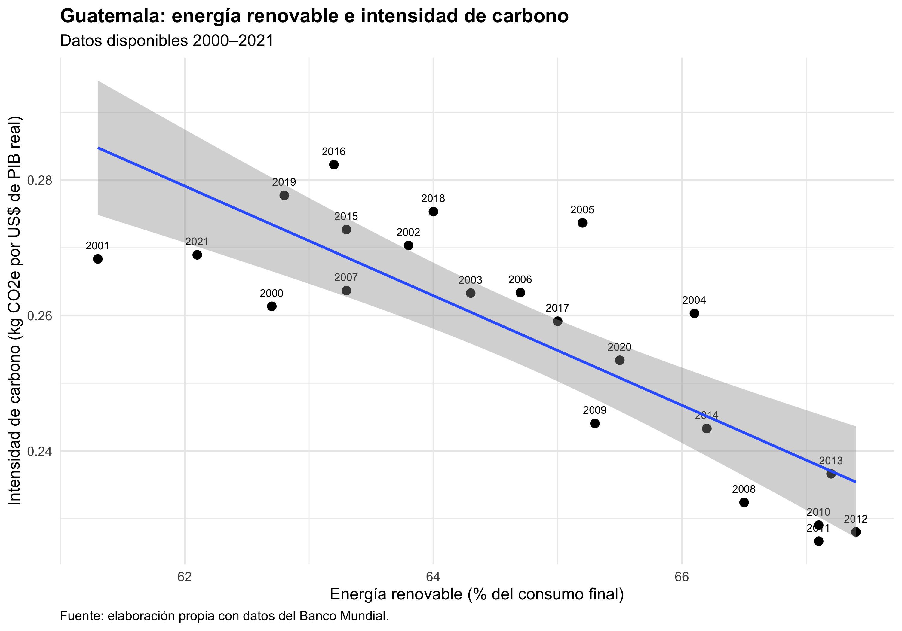
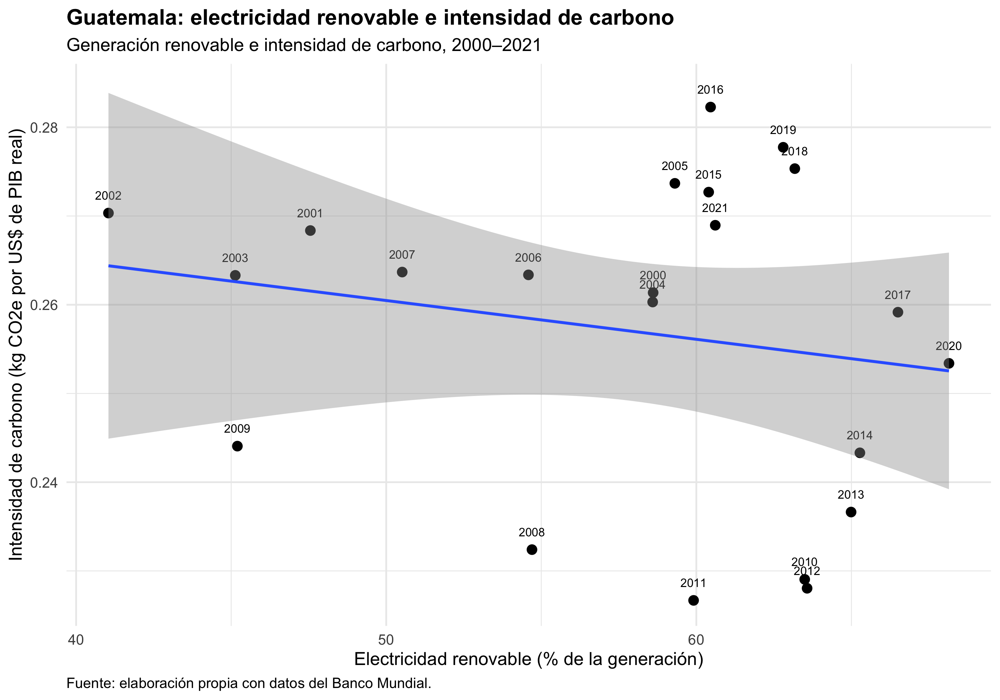

Kairos · Investigación · Nota técnica
Desacoplamiento entre crecimiento económico y emisiones de CO2 en Guatemala, 2000–2024
Datos, metodología, resultados econométricos y pruebas de robustez
Esta nota técnica analiza la relación entre crecimiento económico y emisiones de dióxido de carbono en Guatemala entre 2000 y 2024. El objetivo es evaluar si la economía guatemalteca presenta evidencia de desacoplamiento entre actividad económica y emisiones, y explorar si la composición energética está asociada con cambios en la intensidad de carbono. El análisis utiliza datos anuales de World Development Indicators del Banco Mundial, combinando medidas descriptivas, índices normalizados, elasticidades, regresiones log-log, primeras diferencias y pruebas de sensibilidad.
Los resultados muestran que entre 2000 y 2024 el PIB real aumentó aproximadamente 126.8%, mientras las emisiones de CO2 aumentaron 110.4%. La intensidad de carbono disminuyó aproximadamente 7.23%. Estos resultados son consistentes con desacoplamiento relativo, pero no con desacoplamiento absoluto. La relación entre cambios anuales del PIB y emisiones es altamente sensible a las observaciones correspondientes a 2020 y 2021. Finalmente, una mayor participación de energía renovable en el consumo final está asociada consistentemente con menor intensidad de carbono bajo distintas especificaciones — el diseño del estudio, sin embargo, no permite establecer causalidad.
Contenido de esta nota
- Preguntas de investigación
- Marco conceptual: desacoplamiento
- Datos
- Construcción de variables
- Resultados 2000–2024
- Análisis por subperíodos
- Modelo PIB–CO2: niveles y diferencias
- Sensibilidad al shock 2020–2021
- Renovables e intensidad de carbono
- Electricidad renovable
- Tabla econométrica consolidada
- Diagnósticos y extensiones
- Qué encontramos / qué no
- Limitaciones
- Código · Reproducir
- Referencias
- Conclusión
1. Preguntas de investigación
Esta nota busca responder tres preguntas:
- ¿Existe evidencia de desacoplamiento entre PIB real y emisiones de CO2 en Guatemala entre 2000 y 2024?
- ¿La relación entre crecimiento económico y emisiones es estable a lo largo del tiempo?
- ¿La composición energética está asociada con una menor intensidad de carbono?
El estudio es exploratorio y econométrico-descriptivo. No constituye una estrategia de identificación causal.
2. Marco conceptual: desacoplamiento
El desacoplamiento describe una reducción del vínculo entre crecimiento económico y presión ambiental. La literatura distingue dos grados principales:
Se utiliza como referencia conceptual la literatura de Peter Tapio sobre grados de desacoplamiento y el marco utilizado por la OCDE (ver referencias), sin pretender una revisión extensa de literatura.
3. Datos
Todas las variables provienen de World Development Indicators del Banco Mundial:
| Variable | Código Banco Mundial | Descripción |
|---|---|---|
| PIB real | NY.GDP.MKTP.KD | GDP (constant 2015 US$) |
| CO2 total | EN.GHG.CO2.MT.CE.AR5 | Carbon dioxide emissions excluding LULUCF (Mt CO2e) |
| Energía renovable | EG.FEC.RNEW.ZS | Renewable energy consumption (% of total final energy consumption) |
| Electricidad renovable | EG.ELC.RNEW.ZS | Renewable electricity output (% of total electricity output) |
Fuente: World Bank — World Development Indicators. El período principal es 2000–2024. Las variables energéticas tienen menor disponibilidad temporal y se utilizan hasta el último año con observaciones disponibles; en este experimento, las series energéticas utilizadas llegan hasta 2021.
4. Construcción de variables
Por qué utilizamos PIB real
Utilizamos PIB en dólares constantes de 2015 para evitar confundir crecimiento real de producción con cambios puramente nominales derivados de precios o inflación. No se utiliza PIB nominal en el análisis principal.
Definición de emisiones
Las emisiones utilizadas corresponden a EN.GHG.CO2.MT.CE.AR5: Carbon dioxide emissions excluding LULUCF (Land Use, Land-Use Change and Forestry). Esta decisión implica que el experimento no estudia directamente las emisiones derivadas del cambio de uso de la tierra y el sector forestal — una precisión especialmente importante para interpretar el caso guatemalteco.
Energía renovable: dos variables distintas
Distinguimos cuidadosamente entre dos indicadores, porque producen resultados econométricos diferentes:
Consumo final renovable (EG.FEC.RNEW.ZS): energía renovable como porcentaje del consumo final total. Puede incluir biomasa y otras fuentes renovables tradicionales — no debe interpretarse exclusivamente como solar, eólica o generación eléctrica moderna.
Electricidad renovable (EG.ELC.RNEW.ZS): electricidad renovable como porcentaje de la generación eléctrica.
Tasas de crecimiento e intensidad de carbono
Crecimiento del PIB:
Crecimiento del CO2:
Intensidad de carbono:
Para obtener una unidad interpretable:
Dado que 1 Mt = 10⁹ kg, la variable representa kilogramos de CO2e por dólar constante de 2015 de PIB.
Índices normalizados
Construimos índices con base 2000 = 100. Para PIB:
Para CO2:
Esto permite comparar directamente las trayectorias acumuladas de ambas variables aunque estén expresadas originalmente en unidades distintas.
Elasticidad descriptiva
Interpretación simplificada: ε > 1 indica que las emisiones crecen más rápido que el PIB; 0 < ε < 1 es compatible con desacoplamiento relativo; ε < 0, cuando el PIB crece, es compatible con desacoplamiento absoluto. Esta clasificación no se presenta como una prueba causal.
La elasticidad punta a punta (≈0.908) y el coeficiente de la regresión log-log (≈0.970) no son el mismo estimador. La primera compara únicamente los valores extremos de la serie, 2000 y 2024, e ignora la trayectoria intermedia. El segundo se estima utilizando todas las observaciones anuales del período. No deben interpretarse como versiones equivalentes de una misma cantidad.
5. Resultados 2000–2024

La economía guatemalteca produjo considerablemente más output económico en 2024 que en 2000, y las emisiones también aumentaron. Sin embargo, el PIB aumentó algo más rápido que las emisiones, lo cual es consistente con desacoplamiento relativo. No existe evidencia de desacoplamiento absoluto de largo plazo, porque las emisiones totales aumentaron aproximadamente 110%.
6. Análisis por subperíodos
| Período | PIB real | CO2 | Elasticidad aproximada |
|---|---|---|---|
| 2000–2007 | +30.0% | +31.2% | 1.03 |
| 2008–2014 | +20.1% | +25.7% | 1.24 |
| 2015–2019 | +13.8% | +16.0% | 1.14 |
| 2020–2024 | +20.8% | +15.6% | 0.77 |
| 2021–2024 | +11.8% | +0.8% | 0.073 |
Los primeros períodos presentan un vínculo relativamente estrecho entre crecimiento y emisiones. La divergencia se hace mucho más visible recientemente: entre 2021 y 2024, el PIB creció aproximadamente 11.8%, mientras las emisiones apenas aumentaron alrededor de 0.8%.
Cuatro observaciones no son suficientes para concluir que Guatemala haya experimentado un cambio estructural permanente.
7. Modelo econométrico: niveles y primeras diferencias
Modelo en niveles
El coeficiente puede interpretarse como una elasticidad asociativa.
PIB y emisiones presentan tendencias persistentes. Una regresión en niveles puede producir una relación estadística muy fuerte aunque parte de esa asociación provenga simplemente de que ambas variables evolucionan en el tiempo. Por ello complementamos el análisis con primeras diferencias. El R² elevado no se presenta como evidencia causal.
Primeras diferencias

8. Sensibilidad al shock 2020–2021
2020 y 2021 son observaciones extraordinarias asociadas con la pandemia y la recuperación posterior. Al excluirlas como prueba de sensibilidad:
La relación anual prácticamente desaparece.
2020 y 2021 no son observaciones incorrectas ni deben eliminarse del análisis principal. La prueba demuestra que la asociación encontrada en primeras diferencias es altamente sensible a un shock macroeconómico extraordinario.
9. Energía renovable e intensidad de carbono
Interpretación aproximada: un punto porcentual adicional de energía renovable en el consumo final está asociado con una intensidad de carbono aproximadamente 3.2% menor. Por tratarse de un modelo semi-log, la transformación exacta es 100(e^β − 1), de modo que el 3.2% es una aproximación.

Control por tendencia temporal
donde t es una tendencia temporal lineal (el año de la observación).
La tendencia temporal no resulta estadísticamente significativa. El coeficiente de renovables permanece prácticamente inalterado al incorporar una tendencia temporal, lo que reduce —pero no elimina— la posibilidad de que la asociación sea producto de tendencias comunes u otras variables omitidas.
Renovables en primeras diferencias
La relación negativa también aparece al analizar variaciones interanuales, lo que fortalece la robustez descriptiva del resultado. La asociación persiste bajo esta especificación; esto no demuestra que las renovables reduzcan emisiones.
Observaciones influyentes
Utilizamos distancia de Cook. Con aproximadamente 22 observaciones, 4/n ≈ 0.182. La observación de 2001 presenta una distancia de Cook de aproximadamente 0.475. Al excluir 2001 únicamente como prueba de sensibilidad:
La asociación negativa no depende exclusivamente de esa observación. La observación de 2001 no se elimina del modelo principal.
10. Electricidad renovable
Aquí mostramos deliberadamente que no todos los resultados cuentan la misma historia.
Modelo en niveles
No existe evidencia estadística clara de asociación en niveles. Con tendencia temporal, β̂ ≈ −0.003834 (p-value = 0.1857); tampoco resulta estadísticamente significativo.

Primeras diferencias
Aquí sí encontramos una asociación negativa estadísticamente significativa entre cambios anuales. La evidencia para electricidad renovable depende de la especificación utilizada: no encontramos una asociación clara en niveles, pero sí una relación negativa en variaciones anuales.
11. Tabla econométrica consolidada
| Modelo | β | p-value | R² | Interpretación |
|---|---|---|---|---|
| PIB–CO2 · niveles | 0.970 | <0.001 | 0.930 | Asociación fuerte en niveles |
| PIB–CO2 · cambios | 1.842 | 0.014 | 0.246 | Sensible a pandemia |
| PIB–CO2 · sin 2020–21 | 0.473 | 0.685 | 0.008 | Sin asociación clara |
| Renovables · niveles | −0.0322 | <0.001 | 0.685 | Asociación negativa |
| Renovables + tendencia | −0.0323 | <0.001 | — | Resultado persiste |
| Renovables · cambios | −0.0267 | <0.001 | 0.673 | Resultado persiste |
| Renovables · sin 2001 | −0.0364 | <0.001 | 0.732 | Robusto a influencia |
| Electricidad renovable · niveles | −0.0018 | 0.384 | 0.038 | Sin evidencia clara |
| Electricidad renovable · cambios | −0.00451 | 0.0087 | — | Asociación negativa |
12. Diagnósticos y extensiones
Todavía no hemos ejecutado, en la versión reproducible definitiva de este experimento, las siguientes pruebas:
- Breusch–Pagan (heterocedasticidad)
- Durbin–Watson (autocorrelación)
- Errores estándar robustos HC
- Errores estándar Newey–West
Estas son extensiones previstas para una siguiente iteración metodológica. No se afirma que los modelos presentados hayan "superado" esas pruebas.
13. Qué encontramos y qué no encontramos
Qué encontramos
Desacoplamiento relativo, no absoluto
Entre 2000 y 2024 el PIB creció más que las emisiones, pero las emisiones también aumentaron considerablemente.
El vínculo anual PIB–CO2 es inestable
La asociación encontrada en primeras diferencias depende fuertemente de 2020–2021.
La composición energética está asociada con la intensidad de carbono, pero la evidencia no identifica causalidad.
El consumo final renovable presenta una asociación negativa particularmente consistente con la intensidad de carbono. La electricidad renovable presenta resultados más débiles y dependientes de la especificación.
Qué NO encontramos
No encontramos evidencia suficiente para afirmar que:
- Guatemala haya alcanzado desacoplamiento absoluto estructural;
- las energías renovables hayan causado la reducción de intensidad;
- la matriz eléctrica por sí sola explique la evolución observada;
- los resultados de 2021–2024 representen necesariamente un nuevo régimen permanente;
- la relación histórica pueda extrapolarse directamente hacia el futuro.
14. Limitaciones
- Tamaño de muestra: aproximadamente 25 observaciones anuales.
- Tendencias temporales: PIB y emisiones presentan tendencias persistentes.
- Shock 2020–2021: puede ejercer una influencia desproporcionada.
- Variables omitidas: no se controla completamente por estructura sectorial, precios energéticos, transporte, tecnología, eficiencia energética, condiciones hidrológicas ni composición industrial.
- Biomasa: el indicador de renovables de consumo final incluye categorías que no equivalen exclusivamente a renovables eléctricas modernas.
- LULUCF: las emisiones utilizadas excluyen uso de la tierra, cambio de uso y silvicultura.
15. Código · Reproducir
El análisis fue realizado en R y obtiene los datos directamente de la API del Banco Mundial. La ejecución reconstruye los datasets derivados y genera automáticamente las cuatro figuras y los cuatro CSV.
| Componente | Contenido |
|---|---|
| 01_conexion_banco_mundial.R | Descarga y limpieza de series del Banco Mundial |
| 02_analisis_desacoplamiento.R | Construcción de variables, modelos y figuras |
| figures/ | 01_pib_emisiones.png · 02_variaciones_anuales.png · 03_renovables_intensidad.png · 04_electricidad_renovable.png |
| results/ | desacoplamiento_gt.csv · cambios_gt.csv · energia_gt.csv · electricidad_gt.csv |
16. Referencias
- Tapio, P. (2005). Towards a theory of decoupling: degrees of decoupling in the EU and the case of road traffic in Finland between 1970 and 2001. Transport Policy, 12(2), 137–151.
- OECD. Literatura y marco conceptual sobre desacoplamiento entre actividad económica y presiones ambientales.
- World Bank — World Development Indicators. Indicadores: NY.GDP.MKTP.KD, EN.GHG.CO2.MT.CE.AR5, EG.FEC.RNEW.ZS, EG.ELC.RNEW.ZS.
17. Conclusión
La evidencia para Guatemala entre 2000 y 2024 es consistente con un proceso limitado de desacoplamiento relativo entre crecimiento económico y emisiones de CO2. El PIB real aumentó aproximadamente 126.8%, frente a un crecimiento de aproximadamente 110.4% en las emisiones. Como resultado, la intensidad de carbono disminuyó alrededor de 7.2%. Esta mejora es relevante, pero insuficiente para hablar de desacoplamiento absoluto.
Los años recientes presentan una divergencia considerablemente mayor entre crecimiento y emisiones. Sin embargo, el reducido número de observaciones impide determinar todavía si se trata de una transformación estructural.
La composición energética aparece como una posible dimensión asociada con la evolución de la intensidad de carbono. La participación renovable en consumo final presenta una asociación negativa consistente bajo distintas especificaciones. La evidencia para generación eléctrica renovable es más ambigua.
En conjunto, los resultados sugieren que el vínculo entre crecimiento económico y emisiones en Guatemala puede debilitarse. Identificar los mecanismos responsables requerirá análisis posteriores de estructura productiva, transporte, eficiencia energética, generación eléctrica y composición sectorial de las emisiones.